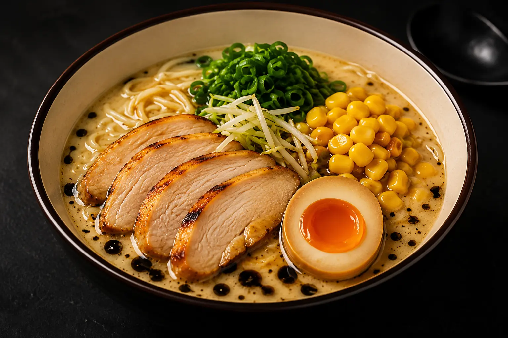

Shio Chicken Raamen
Kergem kanapuljong meresoola maitsega, kana chashu, maisi, ajitsuke muna ja värske sibulaga.
15.50€
Rikkalik sealihapuljong röstitud musta
küüslaugu õliga, chashu-sealihaga, ajitsuke
munaga ja värske rohelise sibulaga.
Meie tonkotsu-puljong valmib üle 18 tunni aeglaselt hautades, et saavutada maksimaalne sügavus, kreemisus ja maitse. Röstitud musta küüslaugu õli lisab puljongile suitsuse ja umamirohke nüansi, mis muudab selle roa tõeliselt meeldejäävaks.
Iga koostisosa on hoolikalt valitud, et luua täiuslik tasakaal maitsete ja tekstuuride vahel.